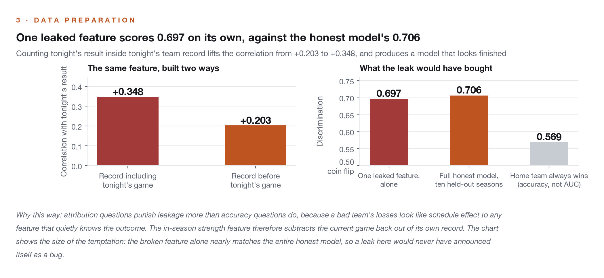
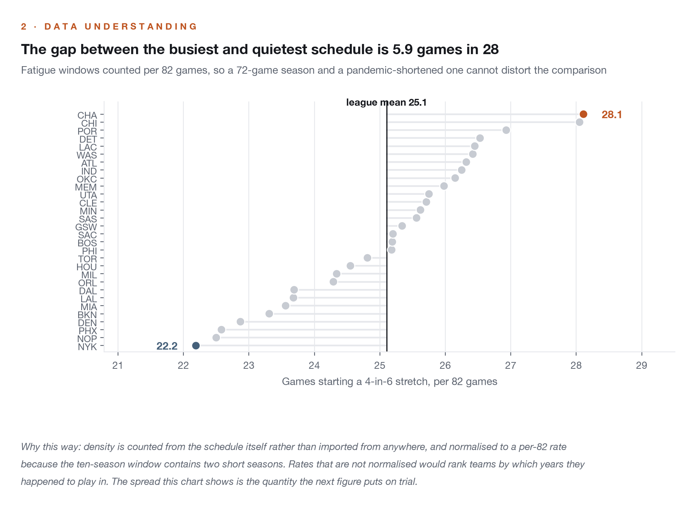
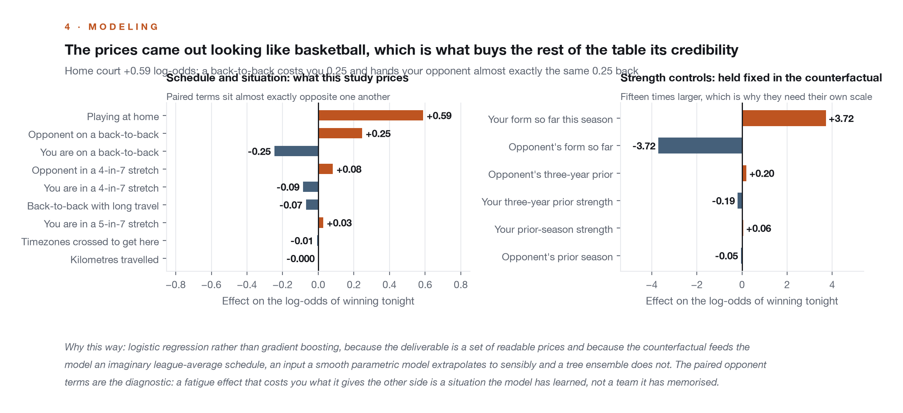
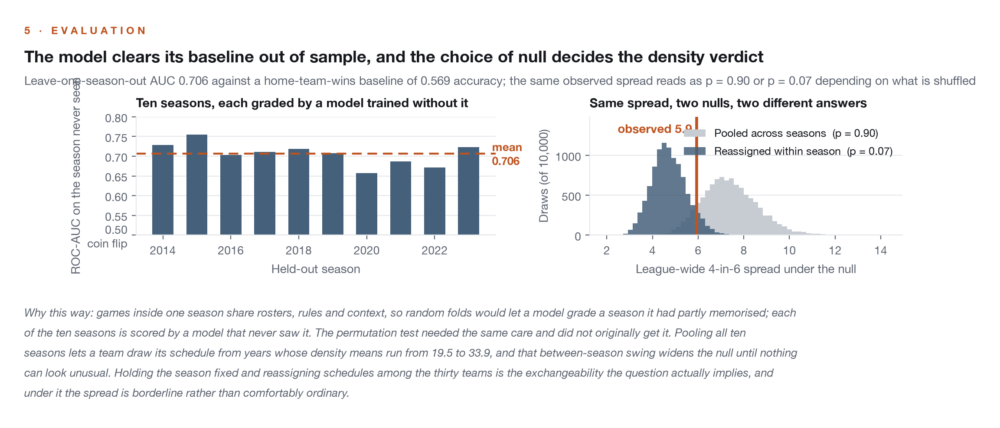
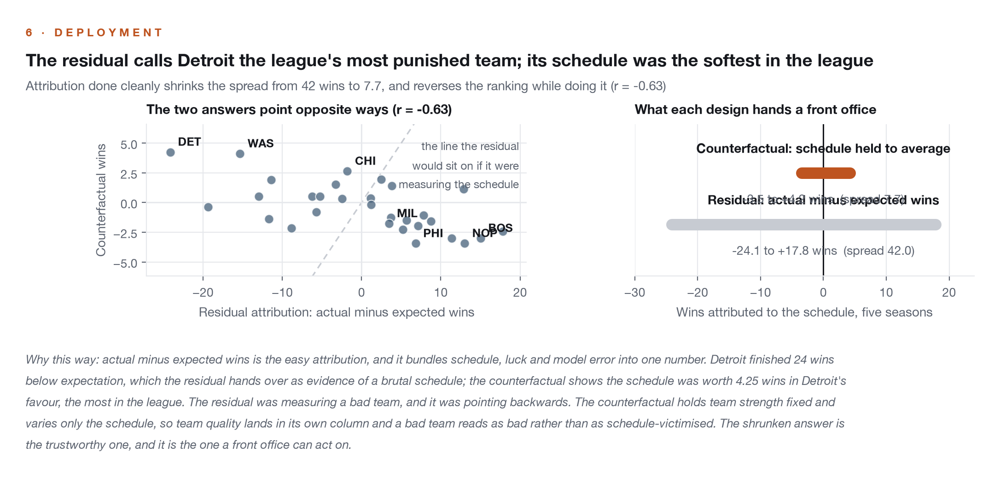

Projects/NBA Schedule Analysis
NBA Schedule Analysis
Significance-tested answers to schedule-density questions, and a win total on every team's schedule luck. Schedule luck is attribution in disguise, handled with a leakage-free counterfactual, because separating earned wins from gifted ones means holding team quality fixed while only the schedule varies.
Two parts: a set of schedule-density questions settled with permutation tests, and a counterfactual model that estimates wins gained or lost to the schedule for all 30 teams across five seasons. The technical substance is the attribution design: the model is prevented, by construction, from mistaking team quality for schedule effect.
How many wins does the NBA schedule actually give or take?
Less than a win per season, even at the extremes. Detroit gained the most (+4.25 wins across 2019-20 through 2023-24) and Philadelphia lost the most (-3.45). Far smaller than fans assume, but real, measurable, and with a coherent cause: a weak Eastern Conference handed its bottom teams the softest slates while contenders paid for it.
Teams complain about schedule difficulty, media narratives assign blame to it, and internal win projections need to correct for it. The analytical question is attribution: separating what the schedule did to a team from what the team was going to do anyway. Attribution questions punish sloppy features, because a bad team's losses look like schedule effect to any feature that correlates with being bad.
The density half solves operational problems of its own. Counting 4-in-6 stretches and back-to-back clusters shows a staff where the fatigue windows are, which feeds rest and rotation planning, and the significance tests say which schedule complaints deserve a data-backed response and which are exactly what random variation produces.
Attribution done in five steps, with the leakage rule that decides everything downstream shown first.





Ten seasons of schedules, team game data, and arena coordinates, with two conventions to respect before any modeling: every game appears twice, once from each team's perspective, and a season is labeled by its starting year. Preparation is mostly derivation and discipline. Back-to-back and density flags are derived from the schedule itself rather than imported; travel is haversine distance between consecutive arenas, with timezone crossings read off the coordinates; density counts normalize to per-82 rates because the window contains a 72-game season and a pandemic-shortened one; and shooting splits pool makes and attempts before dividing, never averaging per-game percentages. The strictest preparation rule is temporal: the in-season strength feature subtracts the current game back out of its own record, so tonight's result can never leak into tonight's features.
The impact table is a model-based counterfactual, not a count of anything observed. For each team, the model sums pre-game win probabilities under the actual schedule, then under a league-average schedule with team strength held fixed in both scenarios; the difference is that team's schedule effect in wins. The chain, end to end:
Every game is scored by a model that never saw its season, and every quotable split ships with a permutation test. What that establishes is a leakage-free attribution design that beats its baseline out of sample. What it does not establish is that the win figures are observed facts: they are model estimates under this design, and they move if the design moves.
- The "some team is systematically punished" story survives its test, but only just, and the first version of that test was wrong. Charlotte starts 28.1 4-in-6 stretches per 82 games and New York 22.2, a spread of 5.9. The original permutation drew its null from all 300 team-seasons pooled, which lets a team collect ten slates from ten different years; season means run from 19.5 to 33.9 across this window, so that between-season swing landed in the null and widened it to a mean spread of 7.4, making the observed 5.9 look unremarkable at p = 0.89. Holding the season fixed and reassigning the thirty schedules within it is the exchangeability the question actually implies, and under it the null mean is 4.7 and the spread reads p = 0.07. Borderline, not comfortably ordinary. The conclusion is unchanged at the 0.05 line; the confidence behind it is not.
- Knowing when a split is quotable is part of the job. Brooklyn defended 1.1 points of eFG% better when the opponent sat on a back-to-back, but the split rests on 16 games and a permutation p near 0.55, so the report calls it noise. The same rest effect the 16-game slice cannot see is priced at +0.25 log-odds by ten seasons of league-wide data: real, small, and invisible at n=16.

Under this design, schedule luck is real but small: less than a win per season even at the five-year extremes, far below the narratives it replaces, with a coherent cause in conference imbalance. The two most-quoted unfairness claims are indistinguishable from what random scheduling produces. The practical read for a front office is that schedule correction belongs in win projections at the margin, and that most schedule complaints do not survive a significance test; the density tables still earn their keep operationally, by locating the real fatigue windows.
The limitations that matter for interpretation:
- Structurally unusual seasons: the window includes the 2019-20 bubble and the 72-game 2020-21 season. Season-fraction normalization helps; the residual limitation is stated, not hidden.
- Mid-season roster upheaval: priors cannot fully see trades and collapses; the shrunk in-season blend mitigates without eliminating.
- Resisting a bigger number: the measured answer, about 0.8 wins per season at the extremes, is less quotable than the narratives it replaces. The analysis says so anyway.
Two deterministic scripts regenerate every number, table, and chart in this study from the raw schedule files, and a re-run reproduces the shipped outputs byte for byte. The 30-team impact table, the coefficient table, and the chart above are the deliverables.
The model class, the feature set and the attribution design were each chosen against a cheaper alternative that would have looked perfectly fine in a chart.
- Why logistic regression over gradient boosting?
- Every coefficient is inspectable, which is the point when the output is an attribution claim rather than a prediction service. A sanity-checkable home-court coefficient buys more credibility than a marginal AUC gain.
- Why a counterfactual instead of residual analysis?
- Residuals mix schedule with everything else the model missed. The counterfactual isolates the schedule by holding team strength fixed and varying only the slate.
- Why leave-one-season-out instead of random folds?
- Games within a season share teams and context; random folds would leak. Scoring each season with a model that never saw it is the test that matches the use case.
- Why deliberately collinear strength priors?
- Collinearity among prior-season, three-year, and in-season strength is good for prediction. The cost is that individual strength coefficients cannot be read causally, so they are not; the schedule coefficients, which are stable, are.
Technical deep dive
Technical highlights
- Leakage prevention as a design constraint: no feature can contain post-tipoff information, which is what makes the output an attribution rather than a description.
- Travel modeled physically: haversine distance between consecutive game arenas, timezone crossings, and a back-to-back-with-long-travel interaction.
- Strength priors that can see trades: prior-season and three-year rolling win percentage blended with a shrunk in-season record, strictly pre-game.
- Significance testing throughout: every quotable split in the density analysis ships with a permutation test, and two headline narratives fail theirs.
Future improvements
Altitude for Denver and Utah is unmodeled because arena coordinates carry no elevation. Player-level rest and load management would sharpen the fatigue features, and an in-season strength update such as an Elo variant could replace the shrunk blend.
Technology stack
Built on ten seasons of NBA schedules, team game data, and arena locations, 2014-15 through 2023-24. Data used for portfolio demonstration only. Both scripts are deterministic and regenerate every table and chart from raw data.